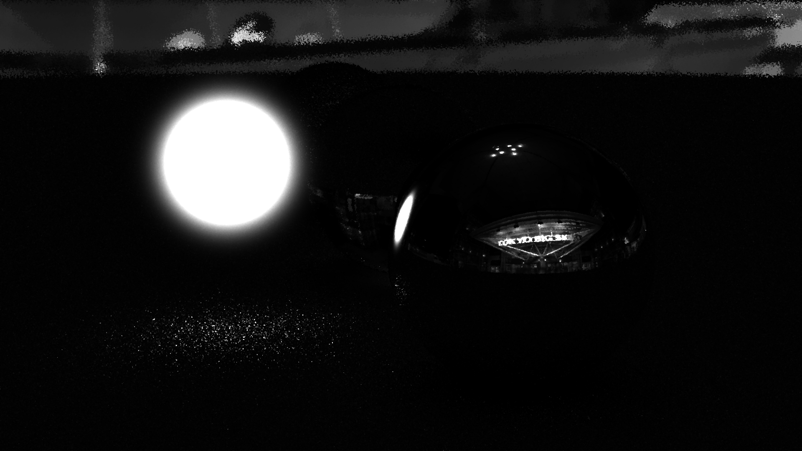
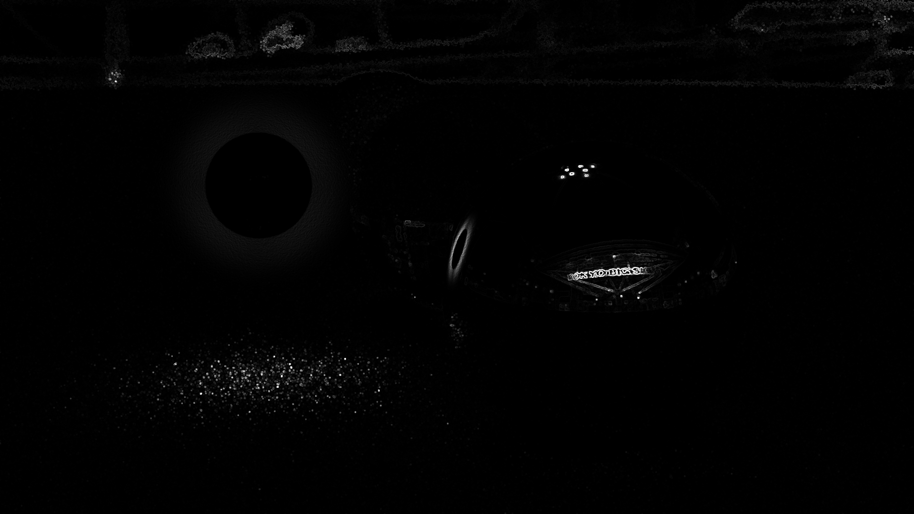
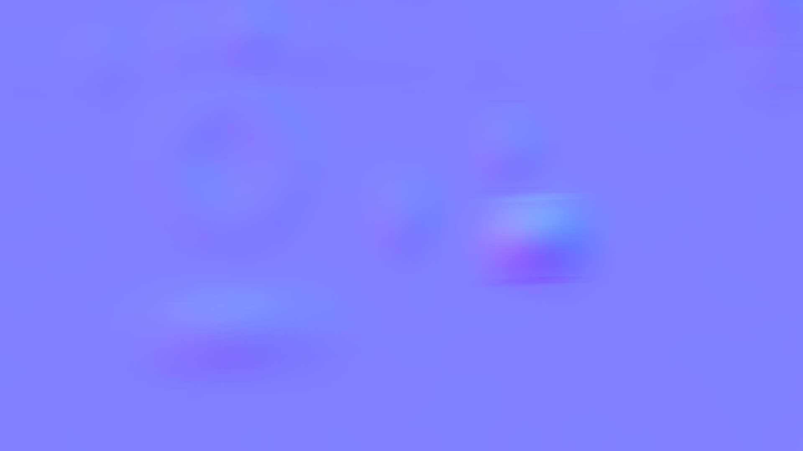

結果
- 1st_render.png (一回レンダリング):

- median.png (メディアンフィルタ後):

- luminance.png (輝度抽出):
- edge.png (エッジ検出):
- edge_blurred.png (ガウスぼかし):
- normal.png (法線マップ):
- 000.png (30秒後):

- 001.png (1分後):

- 002.png (1分30秒後):

- 003.png (2分後):

- 004.png (2分30秒後):

- 005.png (3分後):

- 006.png (3分30秒後):

- 007.png (4分後):

- 008.png (4分30秒後):